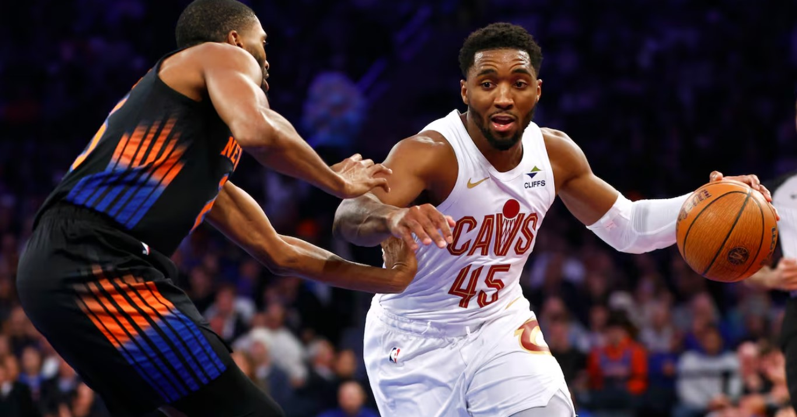
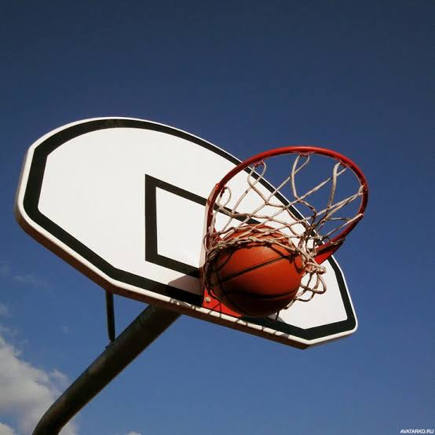

Чому я люблю баскетбол
Баскетбол поєднує швидкість, точність і командну роботу. Тут немає нудних моментів: атака змінюється захистом за лічені секунди, а один кидок може вирішити весь матч. Грати можна майже скрізь: потрібні лише м'яч і кільце.

Історія гри
Баскетбол придумав канадський викладач фізкультури Джеймс Нейсміт у 1891 році в американському місті Спрінгфілд. Йому потрібна була гра для залу взимку, щоб студенти не втрачали форму. Першими «кошиками» були звичайні кошики для персиків, а після кожного влучання м'яч діставали драбиною.
З 1936 року баскетбол входить до програми літніх Олімпійських ігор, а жіночий турнір з'явився на Іграх 1976 року. Сьогодні це один із найпопулярніших видів спорту у світі.
Правила коротко
- Грають 2 команди, на майданчику від кожної по 5 гравців.
- Мета: закинути м'яч у кошик суперника, який висить на висоті 3,05 м.
- Штрафний кидок дає 1 очко, влучання з гри 2 очки, а з-за трисекундної дуги 3 очки.
- З м'ячем у руках не можна бігти: його потрібно вести об підлогу (дриблінг).
- Команда має 24 секунди, щоб виконати кидок по кільцю.
- Матч за правилами FIBA складається з 4 періодів по 10 хвилин, в NBA періоди по 12 хвилин.
- Гравець, який зробив 5 фолів, залишає гру.

Позиції гравців
- Розігрувальний захисник — керує грою, роздає передачі, диктує темп.
- Атакувальний захисник — захищає команду, активно діє в захисті та нападі.
- Легкий форвард — універсал: атакує з будь-якої точки й допомагає команді.
- Важкий форвард — основна гра біля кошика, підбори.
- Центровий — найвищий гравець, захищає кільце й грає під кошиком.